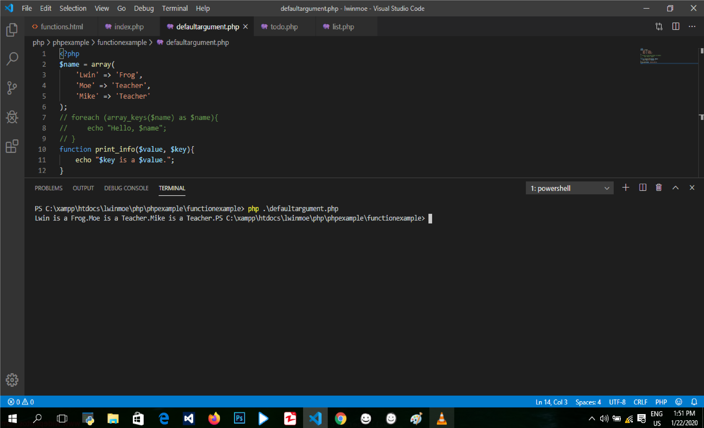

PHP မှာဆိုရင် function ကို နေရာတိုင်းမှာတွေ့ရပါတယ်။ Function တစ်ခုကို put simply လုပ်တာဟာ statements of code တွေကို organize and group လုပ်ဖို့ရန်အတွက် way တစ်ခုပဲဖြစ်ပါတယ်။ Functions တွေကို following analogy နဲ့ describe လုပ်နိုင်ပါတယ်။ Function ကို create လုပ်တဲ့နေရာမှာ function keyword နဲ့ function ရဲ့ name ကို put လုပ်ပေးရမှာဖြစ်ပါတယ်။ ပြီးတော့ open and close parentheses ကို add လုပ်ပြီးတော့ သူ့ရဲ့နောက်မှာ open and close curly braces ကို add လုပ်ပေးရမှာဖြစ်ပါတယ်။ အဲ့ open and close curly braces ထဲမှာ some sort of statement or some sort of PHP work ကို add လုပ်ပေးရမှာဖြစ်ပါတယ်။ နောက်ကျွန်တော်တို့ဟာ function တစ်ခု အလုပ်လုပ်ဖို့ဆိုရင် အဲ့ function ကို call ပြန်လုပ်ပေးဖို့လိုပါတယ်။ နောက် ကျွန်တော်တို့ variables တွေကို declare လုပ်တဲ့အခါမှာလည်း function အတွင်းမှာ declare လုပ်မယ်ဆိုရင် အဲ့ function အတွက်ပဲ variable ဟာ အသုံးပြုလို့ရမှာဖြစ်ပါတယ်။ အဲ့ဒါကြောင့် variable ကို function ရဲ့ outside မှာ declare လုပ်ပြီးတော့ function ထဲမှာ ရှေ့ကနေ global keyword ခံပြီးတော့ variable name ကိုသုံးပြုပေးရမှာဖြစ်ပါတယ်။ အဲ့ဒါမှ variable ဟာ global declare လုပ်ပြီးသားဖြစ်မှာဖြစ်ပါတယ်။
<?php
$current_user = 'Lwin';
function is_lwin(){
if ($current_user == 'Lwin'){
echo 'It is Lwin!';
} else {
echo 'Nope, it is not Lwin';
}
}
?>
အခု ကျွန်တော်တို့ဟာ function ရဲ့ initial structure ကို လေ့လာခဲ့ပြီးဖြစ်ပါတယ်။ အခု ဆက်လေ့လာမှာကတော့ function arguments တွေအကြောင်းပဲဖြစ်ပါတယ်။ Information တွေဟာ functions တွေဆီကို argument list ကို through လုပ်ပြီးတော့ passed လာနိုင်ပါတယ်။ Argument list ဟာ from the left most item to the right ကို evaluated လုပ်တဲ့ comma delimited list of expression တွေပဲဖြစ်ပါတယ်။ ကျွန်တော်တို့ function ဆီကို arguments တွေကို pass လုပ်တဲ့အခါမှာ parentheses ထဲမှာ placing လုပ်ရမှာဖြစ်ပါတယ်။ Argument တစ်ခုကို passing လုပ်တဲ့ methods နှစ်ခုရှိပါတယ်။ First, value နဲ့ passing လုပ်တာဖြစ်ပါတယ်။ အဲ့ဒါဟာာ PHP မှာ default ဖစ်ပါတယ်။ Second, passing by reference ပဲဖြစ်ပါတယ်။ ဆိုလိုတာကတော့ value of an argument ဟာဆိုရင် function scope ကနေပြီးတော့ modified လုပ်ထားတာဖြစ်ပါတယ်။
<?php
function hello($arr){
if (is_array($arr)){
foreach ($arr as $name){
echo "Hello, $name , how is it going!</br>";
}
} else {
echo 'Hello, friends';
}
}
$name = array(
'Thuzar',
'Tun Tun Min',
'Myo Min Htet'
);
hello($name);
?>
Test Yourselfအခုဆိုရင် ကျွန်တော်တို့မှာ function argument ဟာဘာကိုဆိုတယ်ဆိုတာကို နားလည်ပြီဖြစ်ပါတယ်။ အခု default arguments လို့ခေါ်တဲ့ another important component အကြောင်းကို လေ့လာသွားမှာဖြစ်ပါတယ်။ Sometimes, argument တစ်ခုဟာ passed through မဖြစ်ပါဘူး။ ဒါပေမဲ့ ကျွန်တော်တို့ဟာ function မှာ string value တစ်ခုရှိချင်တဲ့အခါမှာ ဒါဟာ ကျွန်တော်တို့ရဲ့ assistance မှာ default argument တစ်ခု come လုပ်လာတာဖြစ်ပါတယ်။ ကျွန်တော်တို့ဟာ optional argument တစ်ခုကို get လုပ်ဖို့ဆိုရင် ကျွန်တော်တို့ဟာ default argument ကို null or string or function ရဲ့ argument definition မှာ ကျွန်တော်တို့ရဲ့ default argument အနေနဲ့ အသုံးပြုချင်တဲ့ any kind of value အနေနဲ့ pass through လုပ်နိုင်ပါတယ်။
<?php
function get_info($name, $title = NULL){
if ($title){
echo "$name has arrived, they are with us as a $title";
} else {
echo "$name has arrived, welcome!";
}
}
get_info('Lwin', 'frog');
?>
In most cases, ကျွန်တော်တို့ဟာ functions တွေထဲမှာ more than echo a value ကို လုပ်ဆောင်ချင်တဲ့အခါမှာ ကျွန်တော်တို့ရဲ့ functions တွေထဲမှာ value တစ်ခုကို return ပြန်ပေးလိုပါတယ်။ ဒီ way နဲ့ ကျွန်တော်တို့ဟာ function call တစ်ခုကနေပြီးတော့ data တွေကို store လုပ်နိုင်ပါတယ်။ အဲ့ data တွေမှာဆိုရင် arrays, integers, Boolean, တို့လည်း ပါဝင်နိုင်ပါတယ်။ Return statement တစ်ခုဟာ function's execution ကို end immediately လုပ်ပေးတာဖြစ်ပါတယ်။ ကျွန်တော်တို့ရဲ့ function ထဲမှာရှိတဲ့ different locations မှာ return ပြန်နိုင်ပါတယ်။ Function တစ်ခုဟာ multiple values တွေကိုတော့ return မပြန်နိုင်ပါဘူး။ Function ဟာ single data type ထဲမှာ multiple values တွေပါတဲ့ array တစ်ခုကိုလည်း return ပြန်ုနိုင်ပါတယ်။ ကျွန်တော်တို့မှာ multiple return values တွေရှိနိုင်ပါတယ်။ ဒါပေမဲ့ ကျွန်တော်တို့ဟာ single function တစ်ခုကနေ more than one value ကိုတော့ return မပြန်နိုင်ပါဘူး။ အဲ့ဒါကြောင့် return clause တစ်ခုပဲရှိတာဖြစ်ပါတယ်။ Return ကို တစ်ကြိမ် runs တဲ့အခါမှာ အဲ့ဒါဟာ function ကို exits လုပ်လိုက်တာဖြစ်ပါတယ်။ ကျွန်တော်တို့ဟာ return ပြန်မဲ့ values တွေကို array ထဲမှာ store လုပ်ထားတဲ့အခါမှာတော့ အဲ့ array name ကို return ပြန်ပေးရမှာဖြစ်ပြီးတော့ echo ဆိုပြီးတော့ ပြန်ပေးတဲ့အခါမှာ array ဆိုပြီးတော့ output ရမှာဖြစ်ပါတယ်။ အဲ့အခါမှာ ကျွန်တော်တို့ဟာ PHP ရဲ့ internal function တစ်ခုကို အသုံးပြုနိုင်ပါတယ်။ အဲ့ function ကတော့ print_R ပဲဖြစ်ပါတယ်။ အဲ့ function ကိုအသုံးပြုမယ်ဆိုရင် ကျွန်တော်တို့ဟာ array ရဲ့ keys and values တွေကိုပဲ ရမှာဖြစ်ပါတယ်။ Example မှာဆိုရင်တော့ array ရဲ့ final key ကို လိုချင်တာဖြစ်တဲ့အတွက်ကြောင့် echo ကိုပဲ အသုံးပြုထားတာဖြစ်ပါတယ်။
<?php
function add_up($a, $b){
$arr = array(
$a,
$b,
$a + $b
);
return $arr;
}
$value = add_up(2,4);
echo $value[2];
?>
PHP ထဲမှာရှိတဲ့ useful concept တစ်ခုဟာတော့ variable functions တွေပဲဖြစ်ပါတယ်။ ဒါဟာဆိုရင် ကျွန်တော်တို့ကို function of the same name တစ်ခုကို call လုပ်ဖို့ရန်အတွက် variable's value တစ်ခုကို အသုံးပြုရန်အတွက် way တစ်ခုကိုပဲဖြစ်ပါတယ်။ ကျွန်တော်တို့ရဲ့ code ထဲမှာ ဒါကို callback တစ်ခုအနေနဲ့ အသုံးပြုကြပါတယ်။ Variable function ကိုအသုံးပြုပြီးတော့ function တစ်ခုကို call လုပ်တဲ့အခါမှာ string variable တစ်ခုကို အသုံးပြုပေးရမှာဖြစ်ပါတယ်။
<?php
function answer(){
return 42;
}
function add_up($a, $b){
return $a + $b;
}
$func = 'add_up';
$num = $func(5,10);
echo $num;
?>
Closures ကိုတော့ မကြာခနအသုံးပြုနေတာတော့မဟုတ်ပါဘူး။ ဒါပေမဲ့ ကျွန်တော်တို့သိထားဖို့လိုပါဘူး။ အဲ့ဒါကြောင် အခု section မှာ closures ကို လေ့လာသွားမှာဖြစ်ပါတယ်။ Closures တွေဟာဆိုရင် anonymous functions တွေဖြစ်ပါတယ်။ သူတို့ဟာ name မရှိတဲ့ functions တွေလည်းဖြစ်ပါတယ်။ သူဟာ function scope ရဲ့ outside မှာ variables တွေကို capable of accessing လုပ်တာဖြစ်ပါတယ်။ ကျွန်တော်တို့ဟာ သူ့ကို အသုံးပြုမယ်ဆိုရင်တော့ ရှေ့က variable name နဲ့ equal ဆိုပြီးတော့ function ဆိုပြီးတော့ ရေးပေးရမှာဖြစ်ပါတယ်။ ပြီးတော့ open and close parentheses နဲ့ နောက်မှာ open and close curly braces ကို add လုပ်ပြီေးတာ့ နောက်ဆုံးမှာ semicolon ကို ထည့်ပေးရမှာဖြစ်ပါတယ်။ အဲ့မှာဆိုရင် variable ထဲမှာ whatever function produces တွေအားလုံး contain ဖြစ်သွားတာဖြစ်ပါတယ်။ Anonymous functions တွေဟာဆိုရင် function scope ရဲ့ outside က things တွေကို access မလုပ်နိုင်ပါဘူး။ ကျွန်တော်တို့ဟာ function scope ရဲ့ outside က things တွေကို access လုပ်ချင်တဲ့အခါမှာ use keyword ကို utilize ပေးရမှာဖြစ်ပါတယ်။
<?php
$name = 'Lwin';
$greet = function () use($name){
echo "Hello, $name!";
};
$greet();
?>
PHP မှာဆိုရင် ကျွန်တော်တို့ရဲ့ life ကို PHP developer တစ်ယောက်ဖြစ်အောင် လုပ်ပေးနိုင်တဲ့ tons of built in functions တွေရှိပါတယ်။ ဒါပေမဲ့ ကျွန်တော်တို့သိဖို့လိုတာကတော့ အဲ့ built in functions တွေကို ဘယ်လို find လုပ်ရမယ် docs ကို ဘယ်လို read လုပ်ရမယ်ဆိုပဲဖြစ်ပါတယ်။ ကျွန်တော်တို့ browser မှာ PHP built in functions လို့ type လုပ်ပြီးတော့ enter လုပ်လိုက်ပြီးတော့ PHP internal built in functions manual ကို သွားပြီးတော့ second paragraph မှာ " how to read function definition " ကိုသွားပြီးတော့ built in functions တွေကို read လုပ်နိုင်ပါတယ်။
Strings တွေဟာဆိုရင် PHP မှာ ကျွန်တော်တို့အတွက် major data type တစ်ခုဖြစ်ပါတယ်။ အခု section မှာတော့ PHP's built in string functions တွေကို လေ့လာသွားမှာဖြစ်ပါတယ်။ အဲ့မှာဆိုရင် ကျွန်တော်တို့ string length ဟာဆိုရင် integer ကိုပဲ return ပြန်ပေးတာဖြစ်ပါတယ်။ အဲ့ integer ကတော့ ကျွန်တော်တို့ရဲ့ string ဟာ ဘယ်လောက် ရှည်တယ်ဆိုတဲ့ number ပဲဖြစ်ပါတယ်။
နောက် sub-string function ကို PHP built in functions မှာလေ့လာနိုင်ပါတယ်။ အဲ့မှာဆိုရင် သူနဲ့ပါတ်သတ်တဲ့ definition တွေရှိပါတယ်။ အဲ့မှာ သူဟာ ကျွန်တော်တို့ကို string value တစ်ခုကို return ပြန်ပေးတာဖြစ်ပါတယ်။ နောက် သူဟာ arguments နှစ်ကို expecting လုပ်ပါတယ်။ First argument ဟာ ကျွန်တော်တို့အသုံးပြုချင်တဲ့ string ဖြစ်ပါတယ်။ Second ကတော့ ကျွန်တော်တို့ ဘယ်ကစချင်ပါတယ်ဆိုတဲ့ integer value တစ်ခုဖြစ်ပါတယ်။ နောက် square brackets ထဲရှိတာကတော့ optional ဖြစ်ပါတယ်။ သူ့ကိုလည်း integer အနေနဲ့ pass လုပ်ပေးရမှာဖြစ်ပါတယ်။ အဲ့ optional ကတော့ ကျွန်တော်တို့ string ကိုဘယ်နေရာမှာ end လုပ်ချင်ပါတယ်ဆိုပြီးတော့ integer value ကို pass လုပ်ရတာဖြစ်ပါတယ်။
Next function ကတော့ string position ပဲဖြစ်ပါတယ်။ သူ့ကိုလည်း PHP built in functions manual မှာလေ့လာနိုင်ပါတယ်။ ဒီ function ဟာဆိုရင် keywords တွေအသုံးပြုပါတယ်။ အဲ့ဒါတွေကတော့ array names တွေဖြစ်တဲ့ needle and haystack တို့ပဲဖြစ်ပါတယ်။ အဲ့မှာ haystack ဟာဆိုရင် ကျွန်တော်တို့ရဲ့ full string ဖြစ်ပါတယ်။ Needle ကတော့ ကျွန်တော်တို့ ဘာကို ဘယ်လို find လုပ်ချင်တယ်ဆိုတာပဲဖြစ်ပါတယ်။ နောက် needle ဟာဆိုရင် string တစ်ခုမဟုတ်ပါဘူး။ သူဟာ integer တစ်ခုအဖြစ် converted လုပ်ပေးတာဖြစ်ပြီးတော့ character တစ်ခုရဲ့ original value တစ်ခုအနေနဲ့ applied လုပ်ပေးတာဖြစ်ပါတယ်။ Normally, ကျွန်တော်တို့ဟာ သူ့ကို string အနေနဲ့ put လုပ်ရမှာဖြစ်ပါတယ်။ နောက် ကျွန်တော်တို့ဟာ integer ကိုလည်း put လုပ်နိုင်ပါတယ်။ နောက် သူဟာဆိုရင် ကျွန်တော်တို့ကို string position ကို return ပြန်ပေးတာဖြစ်ပါတယ်။ String တွေမှာဆိုရင် position zero ကနေ starting လုပ်ကြတာဖြစ်ပါတယ်။
Arrays တွေဟာဆိုရင် ကျွန်တော်တို့ကို several different data types တွေကို store and organize လုပ်ဖို့ရန် allow လုပ်တဲ့ super-flexible data type တစ်ခုဖြစ်ပါတယ်။ ဒီ flexibility နဲ့ ကျွန်တော်တို့ဟာ array data တွေကို work and manage လုပ်ဖို့ရန် a lot of ways ကို လိုအပ်ပါတယ်။ Array functions နှစ်ခုရှိပါတယ်။ First one ကတော့ array_keys လို့ခေါ်ပါတယ်။ Next one ကတော့ array_walk လို့ခေါ်ပါတယ်။ သူတို့နှစ်ခုကိုလည်း PHP array functions documentation မှာလေ့လာနိုင်ပါတယ်။ First one ဖြစ်တဲ့ array_keys ဟာဆိုရင် keys အားလုံး or subset of the keys of an array ကို return ပြန်ပေးတာဖြစ်ပါတယ်။ သူဟာ argument တစ်ခုပဲလိုအပ်ပါတယ်။ အဲ့ argument ကတော့ array ကိုယ်တိုင်ပဲဖြစ်ပါတယ်။
အခုတစ်ခါမှာတော့ next one ဖြစ်တဲ့ array_walk ကိုသွားကြည့်ရအောင်။ Array_walk ဟာဆိုရင် user supplied function တစ်ခုကို array တစ်ခုရဲ့ every member တွေဆီကို apply လုပ်ပေးပါတယ်။ ကျွန်တော်တို့ဟာ array_walk ကိုအသုံးပြုမယ်ဆိုရင် function တစ်ခုကို create လုပ်ပေးဖို့လိုပါတယ်။ အဲ့ function ဟာ array ရဲ့ value and key ကို သိဖို့လိုပါတယ်။ အဲ့ဒါအတွက် ကျွန်တော်တို့ဟာ array_walk ရဲ့ documentation ကိုပြန်သွားကြည့်ဖို့လိုပါတယ်။ အဲ့မှာဆိုရင် array_walk ရဲ့ second argument or callback ဟာဆိုရင် parameters နှစ်ခုကို ယူပါတယ်။ First ကတော့ array parameters value ဖြစ်ပြီးတော့ second ကတော့ key or index ပဲဖြစ်ပါတယ်။ အဲ့နှစ်ခုကို ကျွန်တော်တို့ရဲ့ function မှာ arguments အနေနဲ့ put လုပ်ပေးရမှာဖြစ်ပါတယ်။
